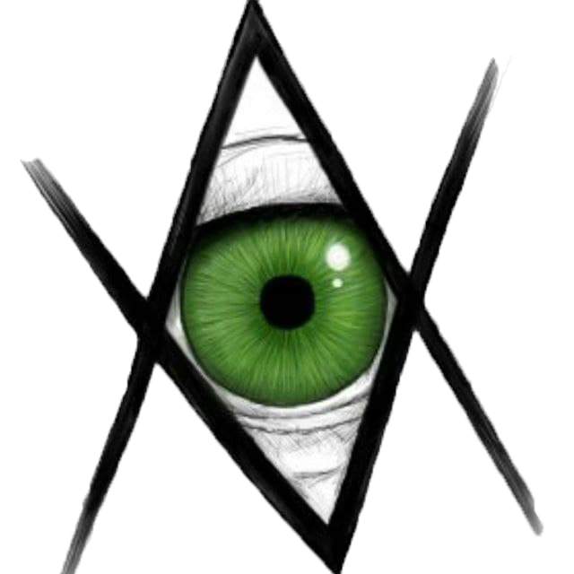

“Ґрати” – це сучасне мистецьке об’єднання, засноване групою студентів з Острога. Ми націлені на розвиток творчої молоді, яку не повинна стримувати цензура. Думки і творчість – це те, що робить людину людиною, а отже потрібно розвивати будь-який талант, що ховається в душі у кожного.

Ґрати
+380 63 429 9611